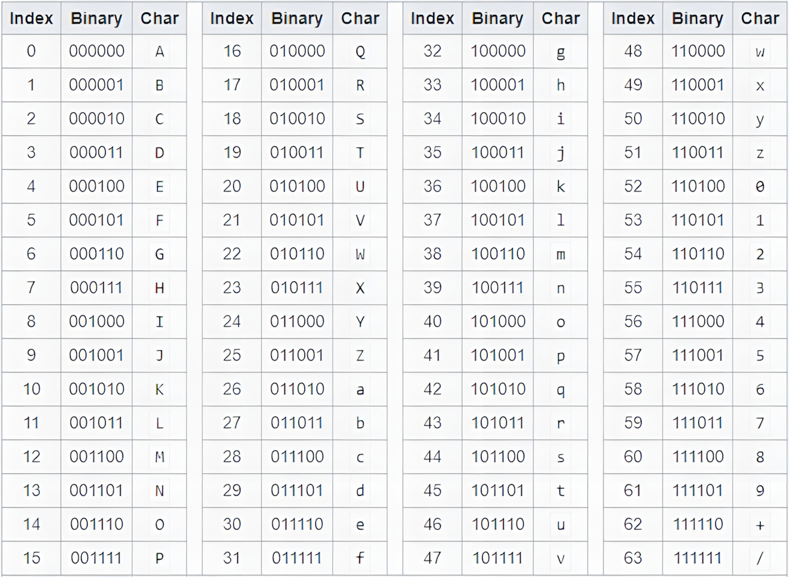

<!-- .slide: data-state="front hide-controls" --> <div id="title">Cybersecurity Essentials</div> <div id="subtitle">Data Privacy and Security</div> <div id="date">Data Science and Management (DASMA)</div> --- <!-- .slide: data-state="break-blue hide-controls" --> # Cybersecurity Properties --- ## Security: what are we talking about? <div class="content-center"> Security is always about protecting something valuable (an asset) against threats by reducing risk to an acceptable level. <br/> <br/> Think of it as a continuous balancing act between: - What we want to protect (data, systems, reputation, money, lives) - Who or what threatens it (attackers, accidents, insider threats, natural disasters) - How much protection we can afford (cost, usability, performance trade-offs) <br/> </div> --- ## Security vs Safety <div class="content-center"> **Security**: protection of assets from both intentional harm (attacks, sabotage) and accidental harm (incidents, failures). Security is about managing risk, not eliminating it completely. <br/> **Safety**: protection of people and the environment from unintentional harm (e.g., accidents, equipment failures, natural disasters). <br/> <br/> <div class="fragment" data-fragment-index="0"> <div class="alert alert-recall"><b>Key difference</b>: - Safety focuses on <b>accidents</b>. - Security considers <b>malicious actions</b>.</div> </div> </div> --- ## Physical Security <div class="content-center"> Protection of physical assets (buildings, rooms, hardware, documents) against theft, damage, and unauthorized physical access. <br/> <br/> Mechanisms include: - Locks, fences, barriers - Guards, security personnel - Access badges, biometric scanners - CCTV, motion detectors, alarms <br/> <br/> <div class="fragment" data-fragment-index="0"> <div class="alert alert-note"><b>NOTE:</b> Even the best cybersecurity is useless if someone can walk into your server room and steal the disks!</div> </div> </div> --- ## Computer Security <div class="content-center"> Protection of computing resources (hosts, operating systems, applications, data) from unauthorized access, misuse, disruption, and modification. <br/> <br/> Focus areas: - Access control (who can do what) - Malware protection (viruses, trojans, ransomware) - Secure software development - Patch management and vulnerability remediation - Data protection (encryption, backups) <br/> </div> --- ## Cybersecurity <div class="content-center"> Computer security plus the broader context of networks, connected systems, users, and cyber-enabled threats. <br/> <br/> Expands beyond individual computers to include: - Network security (firewalls, intrusion detection, VPNs) - Cloud security and distributed systems - IoT and embedded device security - Human factors (social engineering, phishing, insider threats) - Organizational policies and incident response - Legal and regulatory compliance (GDPR, HIPAA, etc.) <br/> <br/> <div class="fragment" data-fragment-index="0"> <div class="alert alert-hint"><b>Cybersecurity = technical + human + organizational aspects</b></div> </div> </div> --- ## The CIA Triad <div class="content-center"> The classical goals of cybersecurity: <br/> <br/> <div class="fragment" data-fragment-index="0"> **<u>C</u>onfidentiality**: ensure that information is accessible only to those authorized to have access - Prevents unauthorized disclosure of sensitive data - Techniques: encryption, access control, authentication <br/> <br/> </div> <div class="fragment" data-fragment-index="1"> **<u>I</u>ntegrity**: ensure that information and systems are accurate and have not been tampered with - Prevents unauthorized or undetected modification - Techniques: checksums, digital signatures, version control <br/> <br/> </div> <div class="fragment" data-fragment-index="2"> **<u>A</u>vailability**: ensure that authorized users have reliable and timely access to information and resources - Prevents denial of service (intentional or accidental) - Techniques: redundancy, backups, load balancing, DDoS mitigation </div> </div> --- ## Extended Security Properties <div class="content-center"> <div style="padding-top: 10px; padding-bottom: 10px;"> The CIA triad is often extended with: </div> <div class="fragment" data-fragment-index="0"> **Authenticity**: verify that an entity (user, system, message) is who/what it claims to be - Example: digital certificates, multi-factor authentication <br/> <br/> </div> <div class="fragment" data-fragment-index="1"> **Accountability / Auditability**: ensure that actions can be traced back to responsible entities - Example: audit logs, forensic analysis, compliance reporting <br/> <br/> </div> <div class="fragment" data-fragment-index="2"> **Non-repudiation**: prevent a party from denying that they performed an action - Example: digital signatures on contracts, blockchain transactions <br/> <br/> </div> <div class="fragment" data-fragment-index="3"> **Privacy**: control over personal data and its collection, processing, and sharing - Broader than confidentiality: includes consent, purpose limitation, data minimization - Example: GDPR rights (access, rectification, erasure, portability) </div> </div> --- <!-- .slide: data-state="break-blue hide-controls" --> # Data --- ## Data means Bits <div class="content-center"> When we communicate, we exchange data: text messages, images, audio, video, sensor readings, machine learning models, financial transactions… <br/> <br/> <div class="fragment" data-fragment-index="0"> <div class="alert alert-hint"><b>FUNDAMENTAL INSIGHT</b>: At the lowest level, <b><i>all</b></i> digital data is stored and transmitted as <b>bytes</b> (8-bit chunks): - Bytes are just sequences of <b>bits</b> (binary digits: 0 or 1). - A photo, a song, a database, an encrypted message—they're all ultimately just long strings of 0s and 1s.</div> <br/> </div> </div> --- ## Why Bits? Abstraction Layers <div class="content-center"> Bits enable a powerful hierarchy of abstractions: <br/> <br/> <div class="cell-center"> Bits (0, 1) ↓ Bytes (8 bits = 256 possible values) ↓ Data types (integers, floats, characters, booleans) ↓ Data structures (arrays, objects, databases) ↓ Files and protocols (JPEG, MP4, HTTP, TLS) ↓ Applications (web browsers, email clients, streaming services) </div> </div> --- ## Data transformations <div class="content-center"> Several approaches to transform bytes with fundamentally different purposes: <br/> <br/> <div class="fragment" data-fragment-index="0"> | Concept | Primary Goal | Security? | |---|---|:---:| | **Encoding** | Represent data using a different alphabet/format | ✗ no | | **Serialization** | Convert structured data into bytes | ✗ no | | **Compression** | Reduce size by removing redundancy | ✗ no | | **Encryption** | Protect confidentiality (hide content) | ✓ yes | </div> </div> --- ## Encoding <div class="content-center"> Encoding changes representation without changing meaning: - Purpose: Make data compatible with systems that expect certain formats - Example: Email systems historically handled ASCII text, so attachments are Base64-encoded - Example: URLs can't contain spaces, so `hello world` becomes `hello%20world` <br/> <br/> <div class="fragment" data-fragment-index="0"> <div class="alert alert-error"><b>NO SECURITY</b>: Anyone can decode it (no secret key needed)</div> <br/> </div> <div class="fragment" data-fragment-index="1"> Examples: UTF-8, Base64, URL-encoding, ASCII, Hex <br/> </div> </div> --- ## Serialization <div class="content-center"> Serialization is an encoding process that converts in-memory data structures to bytes (and back) - Purpose: Store objects in files or send them over networks - Example: Python dictionary → JSON string → bytes <br/> <br/> <div class="fragment" data-fragment-index="0"> Examples: JSON, XML, Protobuf, MessagePack, Pickle <br/> <br/> </div> <div class="fragment" data-fragment-index="1"> <div class="alert alert-note"><b>NOTE</b>: Transferring raw bytes back to in-memory data is said to be <b><i>deserialization</b></i>.</div> <br/> <br/> </div> <div class="fragment" data-fragment-index="2"> <div class="alert alert-error"><b>NO SECURITY</b>: Serialized data is often human-readable (JSON, XML)</div> <br/> </div> </div> --- ## Compression <div class="content-center"> Compression reduces size by exploiting patterns and redundancy <div class="fragment" data-fragment-index="0"> - ***Lossless***: Perfect reconstruction - Examples: gzip, zstd, bzip2, PNG, ZIP <br/> </div> <div class="fragment" data-fragment-index="1"> - ***Lossy***: Approximate reconstruction, smaller size - Examples: JPEG, MP3, H.264, WebP <br/> <br/> </div> <div class="fragment" data-fragment-index="2"> <div class="alert alert-error"><b>NO SECURITY</b>: Compressed data can be decompressed by anyone</div> <br/> </div> <div class="fragment" data-fragment-index="3"> <div class="alert alert-hint"><b>NOTE</b>: It is often combined with encryption (compress first, then encrypt)</div> </div> </div> --- ## Encryption <div class="content-center"> Encryption transforms data so only authorized parties (with the key) can read it <br/> <br/> <div class="fragment" data-fragment-index="0"> <div class="alert alert-hint"><b>SECURITY</b>: Without the key, ciphertext should look like random noise</div> <br/> <br/> </div> <div class="fragment" data-fragment-index="1"> It comes in two flavors: - ***Symmetric***: same key for encryption and decryption - Examples: AES, ChaCha20 <br/> - ***Asymmetric***: different keys for encryption and decryption - Examples: RSA, Elliptic Curve Cryptography <br/> </div> </div> --- ## Encoding $\neq$ Encryption <div class="content-center"> Even if the data have been encoded and may not be readable, they are not encrypted and can (and will!) be easily decrypted. <br/> <br/> **EXAMPLE**: - the base64 encoding of `password` is `cGFzc3dvcmQxMjM=` - the encoding does not require a secret - the algorithm is deterministic and known - ...hence, the encoding is reversible! </div> --- ## Why do we need Base64? <div class="content-center"> Historically, many systems were designed to handle only *text* (printable ASCII characters): - Email protocols (SMTP) were originally 7-bit ASCII only - URLs have restrictions on which characters are allowed - JSON and XML are text formats that can't directly contain binary data - Configuration files and logs are often text-based <br/> <br/> <div class="fragment" data-fragment-index="0"> **SOLUTION**: Base64 converts binary data into a restricted set of 64 printable ASCII characters: - Letters: `A-Z`, `a-z` (52 characters) - Digits: `0-9` (10 characters) - Symbols: `+`, `/` (2 characters) - Padding: `=` (used to align to 4-character blocks) <br/> </div> </div> --- ## How It Works <div class="content-center"> 1. Consider the input as sequence of bits - Example: `"Cat"` in the ASCII encoding is `01000011 01100001 01110100` (24 bits) <br/> <br/> <div class="fragment" data-fragment-index="0"> 2. Split the sequence of bits into chunks of 6 bits each - Example:`010000 110110 000101 110100` (4 chunks of 6 bits) <br/> <br/> </div> <div class="fragment" data-fragment-index="1"> 3. Convert each 6-bit value (0-63) to a Base64 character according to a predefined table<sup>*</sup> - `010000` (16) → `Q` - `110110` (54) → `2` - `000101` (5) → `F` - `110100` (52) → `0` - Result: `"Cat"` → `"Q2F0"` <br/> <br/> </div> <div class="fragment" data-fragment-index="2"> 4. If input length is not a multiple of 3, use `=` as padding - Example: `"Ca"` → `"Q2E="` </div> </div> <div class="footnotes"> <sup>*</sup> See next slide for the actual table </div> --- ## Base64 Mapping Table <div class="content-center"> <p></p> </div>